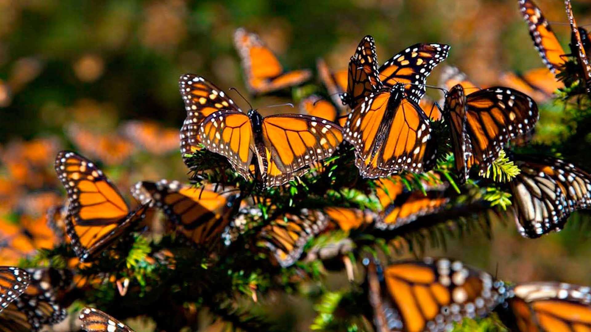
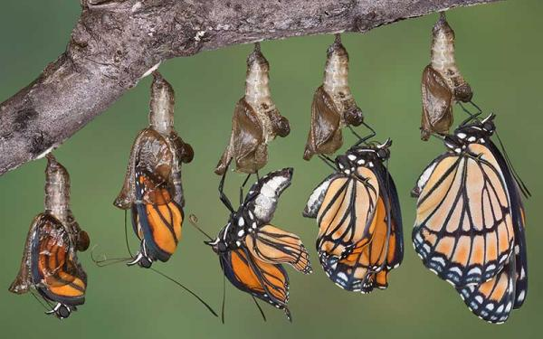
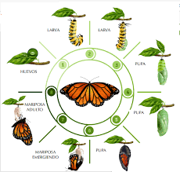
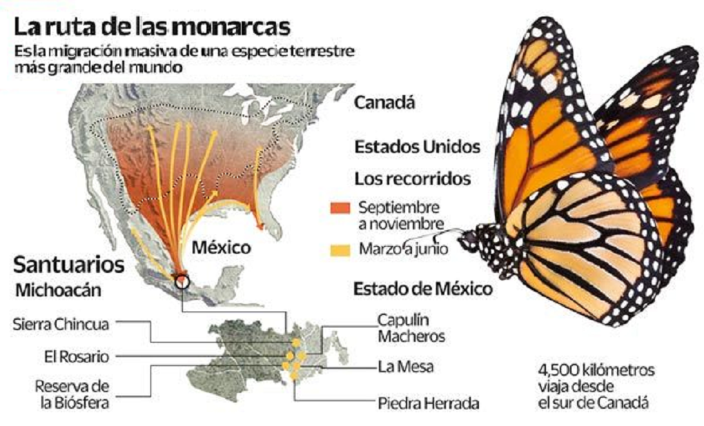

"Pequeña viajera del viento, su destino es prueba de la fuerza en lo delicado."
Nombre común: Mariposa Monarca
Nombre científico: Danaus plexippus
La mariposa monarca mide entre 9 y 11 cm de envergadura. Sus alas son de un vibrante color naranja con bordes negros y puntos blancos. Los machos presentan puntos negros en sus alas traseras.
La monarca pasa por una metamorfosis completa: huevo, larva (oruga), crisálida y adulto. El ciclo entero puede durar de 4 a 6 semanas, excepto la generación migratoria que vive hasta 8 meses.
Se encuentra en América del Norte, desde Canadá hasta México. Prefiere campos abiertos, praderas, jardines y zonas con algodoncillo, donde se reproducen y se alimentan.
Las monarcas migran más de 4,000 km para hibernar en bosques mexicanos. Utilizan señales solares y magnéticas para orientarse, una hazaña única en el reino animal.
Las orugas comen algodoncillo, que les otorga una defensa química contra depredadores. Los adultos se alimentan de néctar de flores como zinnias, cosmos y girasoles.
En el Día de Muertos en México, se cree que representan el regreso de las almas. También simbolizan transformación, resistencia y renovación espiritual.